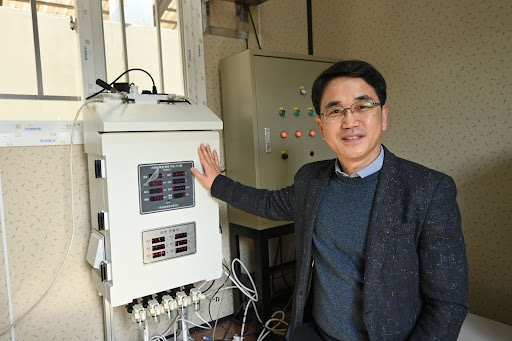
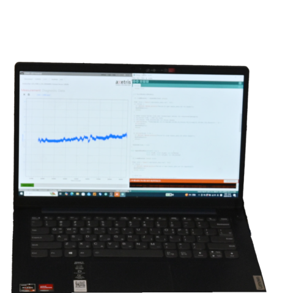
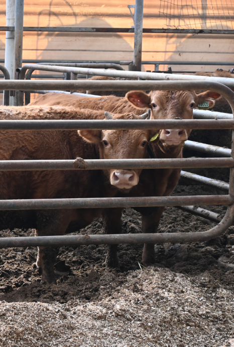
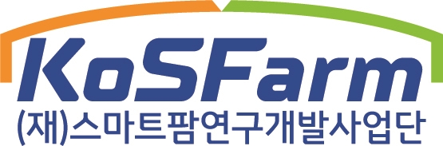

FARMING 농업 ② 악취 없는 깨끗한 축산, AIoT로 완성하다 [출처] FARMING 농업 ② 악취 없는 깨끗한 축산, AIoT로 완성하다|작성자 KoSFarm
페이지 정보

작성자 최고관리자
작성일 2026-04-02 11:05 조회 214회 댓글 0건
본문
과제명 : AIoT 기반 퇴비화 공정 자동화 시스템
개발 및 상용화
연구 책임자 : 충남대학교 안희권 교수
가축분뇨는 단순한 폐기물이 아니라 귀중한 자원이다. 하지만 기존 상용화된 밀폐형 고속발효 시스템은 고가의 설치비와 운영의 어려움으로 중소규모 농가에게 큰 부담이 되어왔다. 충남대학교 산학협력단 안희권 교수는 이러한 현장의 문제를 해결하기 위해 나섰다. 그가 이끄는 연구팀은 기존의 경험 의존적 방식을 탈피해, 실시간 모니터링과 인공지능 알고리즘을 결합한 지능형 자동 퇴비화 시스템을 개발 중이다. 더불어 농가 규모에 맞춰 유연하게 확장 할 수 있는 ‘모듈형 구조’를 채택, 초기 투자 비용을 획기적으로 낮춘 것이 특징이다. 환경과 농가가 상생하는 자원 순환형 농업의 미래를 설계하고 있는 안희권 교수를 만나, 새롭게 탄생할 한국형 스마트 퇴비화 솔루션의 이야기를 들어보았다.
중소농가의 현실적인 고민, 고비용 구조를 깨다
현재 가축분뇨 처리 과정에서 농가들이 직면한 가장 큰 장벽은 ‘비용’이다. 안희권 교수는 현재 상용화 된 밀폐형 고속발효 시스템의 경우 설치비용이 막대해 중소 농가에는 상당한 부담이 된다고 지적했다. 뿐만 아니라, 조금만 처리 용량을 늘리려고 해도 모듈식 확장 구조가 아니기 때문에 동일한 설비를 하나 더 설치해야 했다. 따라서, 현장에서는 현실적으로 추가 투자에 대한 부담이 컸다. 설비의 높은 가격표 이면에는 농가의 전문성이 상대적으로 낮아 첨단 설비 운영에 애를 먹는 현장의 고충도 자리하고 있었다.
충남대학교 안희권 교수
"현재 상용화된 밀폐형 고속발효 시스템은 약 75㎥ 기준으로
1억5천만 원 정도의 설치비가 들어 중소 농가에는 상당한 부담이 됩니다."
이러한 상황에서 안희권 교수는 단순한 분뇨 처리를 넘어 ‘모듈형’과 ‘AIoT’ 기술의 결합을 돌파구로 삼았다. 기존 시스템의 높은 설비 비용과 용량 확장의 한계를 극복하고, 전문성이 부족한 농가에서도 쉽게 운영할 수 있는 시스템이 절실했기 때문이다. 즉, 농가 규모에 맞게 유연하게 확장할 수 있는 구조와 경험에 의존하던 방식을 데이터 기반으로 관리하는 환경으로 결합하는 것이 이번 기획의 핵심 배경이었다.

"농가 규모에 맞게 유연하게 확장할 수 있는 모듈형 구조와, 경험에 의존하던 운영을
데이터 기반으로 관리할 수 있는 AIoT 기술을 결합할 필요성을 느끼게 되었습니다."
공간은 유연하게, 비용은 가볍게 – 혁신적인 모듈형 시스템
"이 시스템은 컨테이너 형태의 모듈식 구조라 농가 여건에 따라 폭이나 길이를 조정할 수 있고,
바닥만 평평하면 별도의 토목공사 없이 설치가 가능합니다."
이번에 개발 중인 시스템의 가장 강력한 경쟁력은 단연 ‘모듈형 구조’다. 컨테이너 형태의 모듈식 구조로 이루어져 있고, 현장 여 건에 따라 폭이나 길이를 조정해 제작할 수 있어 공간 활용성이 뛰어나다. 기본 구동부 1 개 에 확 장 형 모 듈 을 블록처럼 추가하는 방식이어서 향후 처리 용량을 늘릴 때도 유연 하게 대처할 수 있 다 . 바닥만 평평하다면 별도의 대규모 토목공사 없이 설치할 수 있으며, 현장 접근성을 위해 필요할 경우 간단한 시멘트 포장 정도만 하면 된다. 공장에서 제작된 모듈을 현장에서 조립하는 방식이기 때문에 하루이틀 정도면 설치 가능하다. 무엇보다 비용을 획기적으로 낮춰 기존 약 1억 5천만 원 수준 대비 약 33~46% 낮아진 8천만 원에서 1억 원 정도의 경제적 이점을 확보했다.
한우 농가는 깔짚을 보통 2~3개월에 한 번씩 교체하기 때문에
일정량을 한 번에 처리하는 회분식 방식이 적합합니다.
반면 양돈 농가는 고액분리기를 거친 고형물이 매일 발생하기 때문에
지속적으로 투입·처리할 수 있는 반연속식 방식으로 개발하고 있습니다.
축종별 특성도 세심하게 반영했다. 한우 농가는 볏짚 등 깔짚을 보통 2~3개월에 한 번씩 교체하기 때문에 일정량을 한 번에 처리하는 ‘회분식’ 방식을 적용했다. 반면, 양돈 농가는 고액분리기를 거친 고형물이 매일 발생하기 때문에 지속적으로 투입하고 처리할 수 있는 ‘반연속식’ 방식을 채택했다. 이러한 처리 방식의 차이를 극복하기 위해 양돈 농가용 시스템은 한우 농가용과 달리 고형물을 지속적으로 투입 할 수 있는 차별화된 투입 모듈을 사용 한다.
특히, 볏짚 등 깔짚이 많이 혼합된 우분의 경우, 기존 패들식 교반기는 교반 효율 저하 및 고장 등의 문제가 있었다. 이를 보완하기 위해 안희권 교수 연구팀에서 적용한 교반기는 우분 특성에 맞게 설계되어 안정적인 교반과 공정 운영이 가능하도록 그 한계를 극복했다.
데이터로 완성하는 균일한 품질과 악취 없는 친환경 제어
이러한 데이터를 IoT 센서를 통해 실시간으로 모니터링하고 제어에 활용하면
퇴비화 과정을 안정적으로 관리할 수 있어 퇴비 품질을 보다 균일하게 유지하는 데 기여할 수 있습니다.
퇴비화 과정은 정밀한 환경 제어가 필수적이다. 연구팀의 지능형 시스템은 온도, 산소, 함수율은 물 론 이산화탄소와 암모니아 등 가스 농도까지 IoT 센서를 통해 실시간으로 모니터링한다. 온도, 산소, 함수율과 같은 데이터는 유기물 분해 및 질산화 과정과 밀접 하게 관련되어 있어 퇴비화 진행 정도를 판단 하는 중요한 지표가 된다. 또한, 이산화탄소와 암모니아 농도는 부숙도 수준을 판단하는 데 필요한 데이터로 활용된다. 이러한 AIoT 기반 모니터링과 자동제어 시스템 덕분에 전문 인력이 없는 고령 농가에서도 미생물 활성화에 적합한 퇴비화 조건을 자동으로 유지할 수 있다.
축산 농가의 가장 큰 골칫거리인 ‘악취’ 문제 역시 밀폐형 구조와 과학적인 처리 기술로 해결했다. 시스템은 밀폐형 구조로 배가스를 전량 포집한 뒤 집진을 통해 분진을 제거하고, 이후 스크러버를 이용해 악취를 저감하는 방식을 채택했다. 이를 통해 기존 밀폐형 퇴비화 시스템에서 발생하던 악취 민원 문제를 줄이고 환경 규제 대응에도 도움이 될 것으로 기대된다.
에너지 소비를 최소화하는 로직도 눈에 띈다. 퇴비화 과정에서는 원료 특성과 유기물 분해 정도에 따라 필요한 공기 공급량이 달라진다. 이 시스템은 AIoT 기반 지능형 자동 제어를 통해 온도, 산소 등 데이터를 분석하여 송풍량을 최적 수준으로 조절함으로써 불필요한 에너지 사용을 줄이도록 설계되었다. 다만, 열 회수 기능의 경우 이번 개발 범위에는 포함되지는 않았다.
실증 성과와 긴밀한 협력을 통한 미래 비전
과제 종료 시점인 2027년 말에는 실증시설에 대한 평가와
기술 고도화를 마무리할 수 있을 것으로 예상하고 있습니다.
현재 이 연구는 2차년도 개발 단계로, 아직 상용화 단계는 아니다. 실제 농가의 경제적 효과를 정량적으로 평가한 단계까지 진행될 예정이다. 2026년 봄은 파일럿 규모의 시스템을 구축하고 시험 가동을 준비하는 단계다. 퇴비화 속도는 유기물 분해 특성상 크게 단축하기에는 한계가 있어 약 10일 정도를 이상적인 처리 기간으로 보고 있다. AIoT 기반 제어를 통해 공정 조건을 안정적으로 유지할 수 있기 때문에, 향후 이 시스템을 통해서 생산되는 퇴비의 품질 균일도와 만족도는 상당히 높을 것으로 기대하고 있다.


이러한 혁신적인 성과는 각 분야에서 전문성을 갖춘 파트너사들과의 긴밀한 협업이 있었기에 가능했다. 시스템 설계와 제작을 맡은 ㈜지성이엔지, 그리고 AI 제어· 모니터링을 담당한 ㈜지능로봇스튜디오와의 시너지가 빛을 발했다.
안희권 교수는 “파일럿 규모 시스템 제작을 위해 천안에 있는 지성이엔지 공장에서 자주 만나 함께 고민하며 설계를 다듬었던 시간이 기억에 남습니다.”라며 파트너사들과 협업하면서 연구에 대한 자신감이 많이 생겼음을 전했다.
연구팀은 과제 종료 시점인 2027년 말에는 실증시설에 대한 평가와 기술 고도화를 마무리할 수 있을 것으로 예상하고 있다. 이후 정부 지원사업과 연계해 농가 보급을 단계적으로 확대해 나갈 계획이며, 장기적으로는 국내 밀폐형 퇴비화 시스템 시장의 약 20% 정도를 점유하는 것을 목표로 하고 있다.
안희권 교수는 가축분뇨를 단순한 폐기물이 아니라 양질의 비료 자원으로 신속하게 순환시키면 환경 오염과 악취를 줄이고 화학비료 사용을 줄이는 데 기여할 수 있다고 강조한다. 또한 농가가 분뇨 처리 부담 없이 안정적으로 축산업을 지속할 수 있는 기반을 마련하는 데에도 중요한 의미가 있다.
기술 개발도 중요하지만 이를 자원으로 활용하려는
농가의 친환경적인 인식 또한 매우 중요하다고 생각합니다.
그의 굳건한 비전처럼, 농가의 분뇨 처리 부담을 줄이면서도 자원을 효율적으로 활용할 수 있는 기술의 발전이 진정한 스마트 축산 시대를 열어가기를 기대해 본다.
가축분뇨를 단순한 폐기물이 아니라 양질의 비료 자원으로 신속하게 순환시키면
환경오염과 악취를 줄이고 화학비료 사용을 줄이는 데 기여할 수 있습니다.
#kosfarm #스마트팜연구개발사업단 #스마트팜 #충남대학교 #안희권교수 #퇴비화자동화 #가축분뇨자원화 #AIoT
*출처 : KosFarm Magazine VOL.18 <2026 SPRING> 봄호

- 이전글[농림축산식품부X농수축산신문] 2026 축산, 현장 행정을 말하다 26.04.12
- 다음글[전문가 기고] 저탄소 축산, 답은 ‘개량’에 있다 26.03.20
댓글목록
등록된 댓글이 없습니다.